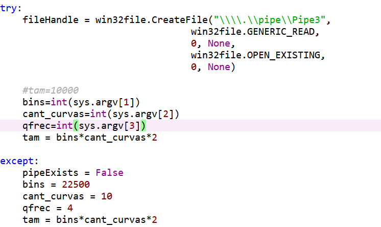
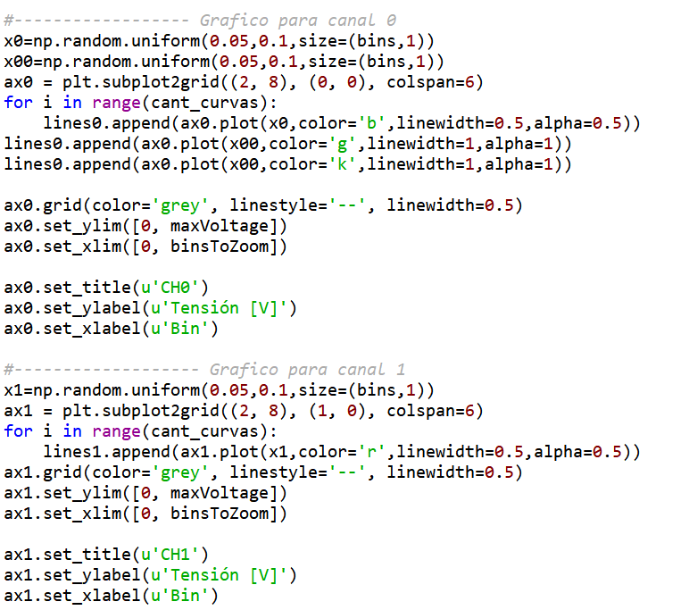
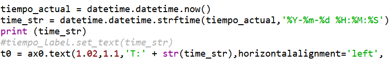
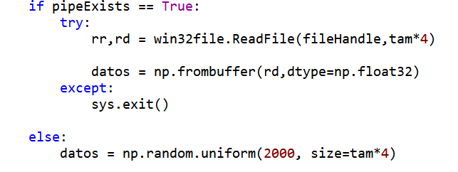
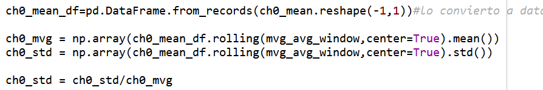

osciloscopio¶
Localización de dos funciones y un bloque de código pseudo-independiente. El bloque de código realiza las siguientes tareas:
Primero crea el pipe de lectura de datos y captura los datos que le llegan por el mismo desde la consola.
{kind=link}
Se reconfiguró esta parte para que, si no puede abrir el pipe, simule datos (en este caso indistinto) para prueba sin un equipo de medición.
Seguido a esto crea los gráficos en formato osciloscopio donde se observan los dos canales de adquisición de datos de la placa AdLink, el cual el canal 0 es el canal donde se registra el ‘pasto’ que utilizamos para registrar las perturbaciones vibracionales en el sistema DAS.
{kind=link}
Mediante las variables maxVoltage y binsToZoom se puede modificar el zoom inicial donde inicia el gráfico.
Luego setea la hora para mostrar en tiempo real el gráfico, con un pequeño retraso de no más de dos segundos.
{kind=link}
Aquí solamente setea el tiempo inicial para graficarlo, más adelante se actualiza en tiempo real. La primer función identificada es la función animate, que, lo que hace, es actualizar los gráficos en tiempo real con los datos que le llegan mediante el pipe.
Primero, la función abre el pipe en formato lectura para captar los datos que llegan desde la consola y con los mismos crea la matriz de dato crudo, que sería lo que nosotros vemos en el waterfall.
{kind=link}
Como se puede ver, está configurado para que, si el pipe ya existe, intente leerlo, en caso de no poder (que sería cuando se corta la medición) el programa se cierra sin errores. En el caso de que un pipe no existiera (que sería prueba sin un equipo), se crean datos aleatorios para hacer pruebas.
Hace un moving average con la media de la señal y luego calcula el desvío.
Como se puede ver, aquí realiza los cálculos correspondientes para el muestreo de la señal de dato crudo, y solo se utiliza el canal 0.
Luego va ploteando los gráficos actualizados, tanto con los datos como con la hora.
{kind=link}
Se actualiza el tiempo y los datos que le van llegando del canal 0.
Luego se encuentra la función init, la cual, lo que hace es darle unos parámetros iniciales para inicializar los gráficos donde se verá el osciloscopio.
Los datos utilizados son datos aleatorios cercanos a lo que realmente se mide para poder ver el gráfico más cercano.
Todo esto se actualiza con una función de matplotlib que funciona como animación. Get the latest news about this at func_animation.
Esta es la función que actualiza el gráfico, se le pasa la figura donde lo actualiza, la animación, la función de inicio, el intervalo de tiempo (en mili segundos) y el blitting.